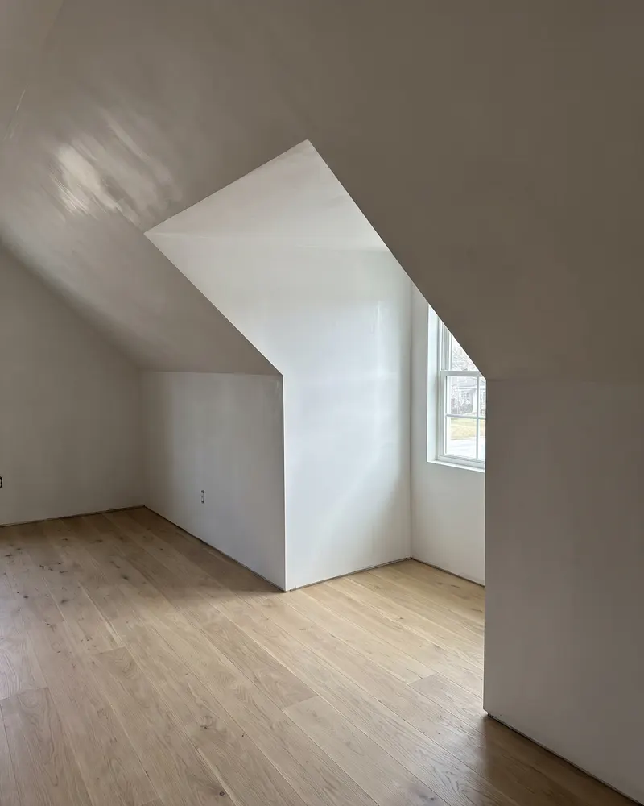
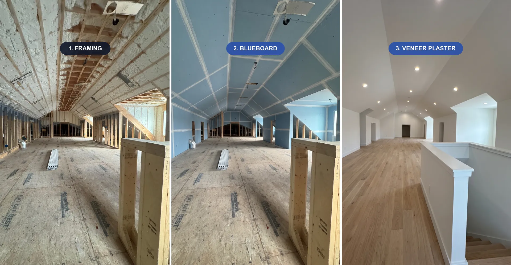

Step by Step
From bare framing to veneer plaster
The framing and shower bench are photos from our jobs. The blueboard and finished attic views illustrate the result of the same space.




The New England standard for smooth, hard-wearing walls in renovations, additions and new construction. A reliable, on-time partner for contractors and homeowners.
Looking for blueboard plaster Boston builders and homeowners can count on? Blueboard and veneer plaster is how walls are done right in New England. Instead of taping and mudding drywall seams, blueboard goes up and a thin, hard coat of veneer plaster is troweled over the whole surface. The result is a monolithic wall with no visible seams, harder and more durable than standard drywall.
Ezra Plastering is the plastering partner general contractors in Greater Boston call when the walls have to be right and the schedule has to hold. We show up on time, communicate clearly, and leave a surface that is ready for paint.
Blueboard is a specialized gypsum board designed to bond with plaster. Over it we apply veneer plaster, a thin, high-strength finish coat, in one continuous surface. There are no taped joints to crack or telegraph, and the wall is noticeably harder than taped drywall.
Taped drywall has dozens of seams, each a potential crack line and each requiring multiple coats of mud and sanding. Veneer plaster covers the entire wall in one hard skin: fewer callbacks, no seam cracking, a flatter surface and far less dust than sanding joint compound.
For new construction and additions, veneer plaster gives you a premium wall at a competitive pace. It is the finish that reads as quality the moment the light hits it, and it holds up to the wear of a real household.
We work as a dependable subcontractor for GCs: realistic scheduling, clear communication, and a crew that respects the site and the trades around us. Because roughly seventy percent of the homes in this area were built with plaster, having a plastering partner who actually shows up is worth a lot on a build.
We also skim-coat existing walls and ceilings to bring rough or damaged surfaces back to smooth, whether you are prepping for paint, a decorative finish, or just tired of a bad drywall job.
The framing and shower bench are photos from our jobs. The blueboard and finished attic views illustrate the result of the same space.

Across Greater Boston, blueboard and veneer plaster remain the standard for new builds and additions, and for good reason. Instead of taping, mudding and sanding drywall in stages, blueboard is hung and then skim-coated with a thin, hard veneer plaster in one continuous surface, giving a harder, flatter, more durable wall with almost no dust.
For general contractors, the value is speed and reliability: a two-coat veneer system is ready far faster than multi-day drywall finishing, and the finished wall resists dings and cracks better over time. We coordinate directly with your schedule and keep the site clean.
For homeowners, it means walls that feel solid, take paint beautifully, and hold up to a busy household, the quiet quality difference people feel without always knowing why.
Homeowners often ask whether veneer plaster is worth it over standard drywall. On material alone it is comparable, but the finished result is harder, flatter and far more resistant to cracks and dings, and it is ready faster because there is no multi-day tape, mud and sand cycle with dust through the house.
For contractors, that speed and a single clean skim coat is the reason blueboard-and-veneer remains the New England standard on new builds and additions. We coordinate with your construction schedule and quote the full scope in writing so there are no surprises for you or your client.
A veneer plaster wall is built in a clear sequence, and each stage sets up the next one. Knowing the order helps homeowners plan around the work and helps general contractors slot it into the schedule without gaps.
1. Walkthrough and scope. We look at the framing, the rooms, the ceiling heights and any curved or detailed areas, then put together a detailed written estimate with the full scope.
2. Hanging the blueboard. The blueboard panels are fastened to the studs and ceiling joists with tight joints and screws set to the right depth. This stage is done by trusted partners working under the owner's direct supervision.
3. Corners and joints. Metal corner bead goes on the outside corners and the seams are taped with fiberglass mesh, so the plaster bonds across every joint as one continuous surface.
4. Base coat. On a two-coat system, a base coat is troweled over the whole wall to straighten the surface and fill the joints.
5. Finish coat. A thin, hard finish coat is troweled on and polished smooth. This is the owner's own hand work, and it is what gives the wall its hard, flat, even look.
6. Cure and paint. Veneer plaster sets in hours and is usually ready for primer and paint within a day or two once it is fully dry, much sooner than a drywall job that still has to be sanded.
Veneer plaster comes as a one-coat or a two-coat system. A one-coat system puts a single thin finish layer directly over the blueboard. It is fast and works well on straight, new framing where the walls are already flat.
A two-coat system adds a base coat under the finish. It builds more thickness, straightens framing that is not perfectly true, and gives a harder, more durable wall. On older homes, on additions that meet existing walls, and anywhere the walls will take heavy use, two coats is usually the better choice. We explain which system fits your project during the walkthrough and put it in the written estimate.
Most Greater Boston homeowners choose a smooth, hard-troweled finish that looks clean under paint and reflects light evenly across the wall. A light sand or float finish is also possible when you want a softer, more traditional texture, or when new walls need to match the existing walls in an older house. If you are not sure, we can trowel a sample area so you can see the finish in your own light before the whole room is done.
Blueboard has a paper face made to bond with plaster, so the finished wall handles normal bathroom humidity well once it is primed and painted with a bathroom-rated paint. It is not a waterproof backer, though. Inside a shower, a tub surround or anywhere water hits the wall directly, the right substrate is a cement board or a waterproofed board under tile, microcement or tadelakt.
Basements need the same care. We check for moisture on the foundation walls before any board goes up, because plaster over a damp wall will not last. When a space has a water problem, the cause has to be fixed first, and we tell you that before we start.
Many projects around Boston, Newton and Brookline are additions or renovations where new walls meet original plaster walls. Drywall next to old plaster often shows a step, a different texture or a line where the two meet. Veneer plaster gets much closer to the hard, flat feel of the original walls, and a two-coat system lets us bring the new surface flush with the old one.
Where the old and new walls meet, we prepare the joint so the plaster bonds across it, and we plan to end the work at natural breaks such as corners and trim lines. The result is a house that feels like one house, not an old part and a new part.
On new builds and additions, plaster comes after rough electrical, plumbing, insulation and inspections, and before trim, flooring and paint. Because veneer plaster sets quickly and needs no sanding, it shortens the time between insulation and paint compared with a tape and mud drywall finish, and it keeps the dust out of the rest of the house.
We confirm the start date with the builder, protect floors, windows and finished surfaces around us, and leave each room clean at the end of the day. If you are managing the project yourself, we walk you through what needs to be ready before we arrive, such as heat in the space during cold months so the plaster cures properly.
A veneer plaster wall needs very little care. Wait until it is fully dry before priming, use a quality primer made for plaster, and the paint will hold for years. Small dings can be filled and touched up like any painted wall, and because the surface is hard, it takes far fewer of them than drywall. If a crack ever appears, it usually points to movement in the framing, and we can look at the cause before repairing the surface.
Yes. The veneer plaster finish coat is harder and more impact-resistant than taped joint compound, and it has no seams to crack.
Regularly. We are a reliable plastering subcontractor for GCs across Greater Boston, with realistic scheduling and clear communication.
Yes. Skim coating brings rough, patched or damaged walls back to a smooth, paint-ready surface.
It is a premium wall system, and the durability, seamless finish and reduced callbacks often make it the better value, especially in quality builds.
 Repair & Restoration
Repair & RestorationCracks, sagging and old lath-and-plaster ceilings restored cleanly, on the day we promise.
Learn more Repair & Restoration
Repair & RestorationCracks, chimneys and exterior walls repaired to last, matching the original texture cleanly.
Learn more Signature Finish
Signature FinishSeamless, waterproof, modern surfaces for bathrooms, showers and floors. The finish designers ask for by name.
Learn moreTell us about your project. We put the scope and value in writing before any price, and the owner answers directly.
Four quick steps. The owner replies within one business day.
Prefer to talk? Call (617) 461-7575
One tap. Your call goes straight to the owner.
Or call now: (617) 461-7575